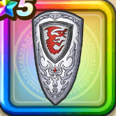

盟友の大盾
攻略班 6.0点 / うけながしのかまえミラーシールドドラゴン系へのダメージ+1%
くわしい特徴
【レベル別習得スキル】 Lv1うけながしのかまえ（消費MP：18）1ターンの間に1度だけ物理攻撃をランダムな敵に跳ね返す Lv5きようさ+5 Lv8さいだいHP+5 Lv10ミラーシールド（消費MP：15）自分に対する呪文を1度だけ反射するバリアをかける。自分が呪文で攻撃されるまで効果は残り続ける。 Lv15ドラゴン系へのダメージ+1% Lv20すばやさ+5 Lv25ガード率+1% 【限界突破スキル】 1凸ギラ属性耐性+1% 2凸ネルゲルへの耐性+3% 3凸ギラ属性耐性+1% 4凸ドラゴン系へのダメージ+1%